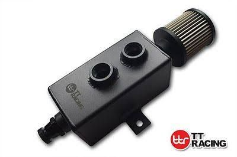
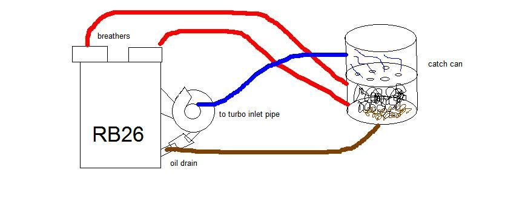

-
I've ditched my valve cover filters because at high boost I was getting oil dripping from them; I knew when I upped the boost these would no longer be sufficient but I'm curious from others…
I'm running hoses into bottles at the moment while I monitor this before I install my catch can set up but before I do what's an acceptable level of crank case blow by? I'm noticing my drivers side (USDM passenger) is more prominent than the other. I should mention the bottles are DRY after hard driving so it's not much.
But afer sitting and then a hot start its considerably worse with visible oil vapour coming from this side, clears up once back and running.
Thoughts on what's considered an acceptable level of blow by or "normal" for a freshly built VG30.Last edited by 300zxt; 03-09-2017, 06:51 AM. -
not sure how much boost you're running or other modifications done to your turbo setup, but it might be best to put the stock air hoses back on, if they are the ones I'm thinking of. I have the same issue on my 280z NA2T … oil comes from the open filter on the valve cover. I am going to get rid of it and put the stock hose and PCV back on there. just a thought.
Bon -
Just do a compression test and you'll know if you have a problem to worry about. Getting any white smoke out the zorst? This was what happened to me when I upped the boost on a tired motor - blowby out the valve covers first, then oil backing up into the turbo from crankcase pressure. -
Run a proper dual catch can setup to get most of the vapors trapped. One can needs to be installed between the intake duct pre-turbo and LH valve cover and another can needs to be installed between the RH valve cover and the PCV valve on the manifold. This setup will minimize the oil being sucked into the turbo when in boost and will minimize the oil being sucked into the manifold when in vacuum.
I have a dual catch can setup on my 2014 Juke Nismo RS 6mt and it catches a lot of nasty stuff. On rainy periods it will catch a lot of water vapor. At times it will catch about 10-12oz of water/vapor mix during really rainy periods and about 5oz of mostly oil vapor during dry periods.
Atmospheric conditions and engine size and condition along with how much boost and how often you boost will determine how much vapor mix you will see.Last edited by NissanEgg; 03-09-2017, 05:10 PM.
1986 300ZX Turbo…sold
1990 Skyline GT-R…new money pit
2014 Juke Nismo RS 6-speed…daily -
This sort of problem goes back to when emission requirements resulted in the change from crank case venting to valve cover venting. Venting via the valve covers means that blowby travels up into the heads picking up oil and other vapors along the way, really high performance engines that do not have to comply with emission testing should have both crankcase and valve cover vents. Bit hard to do with most modern engines though. -
Thanks for the replies. I'm going to do a leak down and compression test anyway just to make sure everything is sweet. I'm sure the vapours I'm seeing are normal, we're thinking it is more prominent on end RHS due to the direction of the crank. It just concerned me sitting in traffic seeing vapour escape my hood!
I have my catch can set up ready to go. One postive is that the temporary bottles I'm using are very dry. My next tune will be @ 20lbs+ so just being cautious. -
This is the catch can I'll be running.

I'll be hiding this somewhere out of sight, running both sides into the can and then remove the breather and plumb before the turbo.
Any issues with this setup? -
Like this, except I'll just have the oil drain to a bleed valve to drain periodically rather than plumbed back in.
 -
Something like that would be okay.
1986 300ZX Turbo…sold
1990 Skyline GT-R…new money pit
2014 Juke Nismo RS 6-speed…daily -
-
Very nice,I like that idea with the catch can. -
I was running 24psi for a few years. I have the breather from the left valve cover going into the intake before the turbo and right side going into the PCV valve as standard. Left side has always been pretty dry. Right side is pretty wet. Being a street car, it's not on boost for more than a few seconds at a time so I'd say it's pretty normal for the PCV side to have more oil than the breather side. Intake manifold has always had a coating of oil also. Never had any oil burning issues though.Straya, +61

Copyright © 2006–. All rights reserved. Privacy Policy